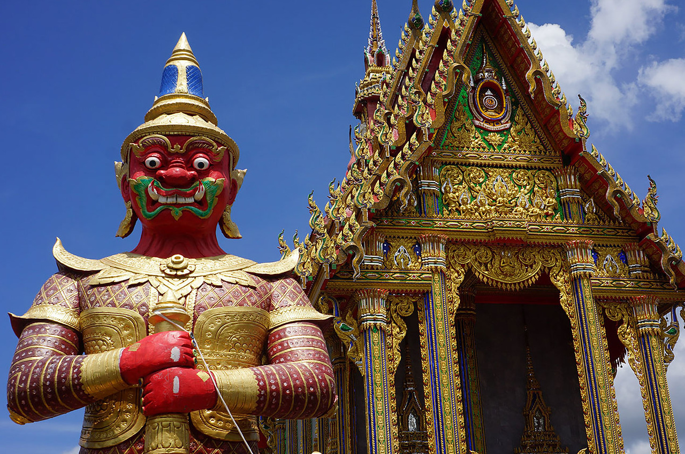

Aktiviteter
- Golf
- Vattenskoter och bananbåt
- Traditionell thaimassage
- Dykning och snorkling

Utflykter och sevärdheter
- Lokala marknader
- Munktempel
- Vattenfall
Precis utanför Mae Pim Beach ligger Koh Samet, en magnifik ö som är klassad som nationalpark. Djurlivet under vattenytan sprakar av alla regnbågens färger, och förutom att snorkla är promenader längs de fantastiska sandstränderna den bästa sysselsättningen på ön. Det tar knappt en timme att ta sig hit. (30 min med bil samt 20 minuter med båt).
På Turtle Island - Sköldpaddsön - som ligger vid sidan om Koh Samet, kan du se jättelika havssköldpaddor komma upp på stranden och lägga sina ägg.
Ungefär två timmar från Mae Pim Beach finner vi den vackra ön Koh Chang. Palmer, stränder och kristallklara vatten trängs i den fantastiska thailändska arkipelagen. Här kan du njuta av härlig grönska och kritvita sandstränder där du slipper trängas. Koh Chang är fortfarande relativt oexploaterad och orörd, även om det på senare tid byggts en hel del hotell. 70 procent av öns yta täcks av djungel. Här lever vilda grisar, apor och ormar. Ön, som är Thailands näst största, ligger mellan Thailand och Kambodja.
Staden Rayong är ganska liten men växer alltjämt. Här finns goda möjligheter till bra shopping med varuhus såsom Lotus, Caarefour, Index och Robinson. Det finns även flera tempel att besöka.
14 km från Mae Pim Beach ligger den lilla staden Klaeng. Staden erbjuder bra shopping på såväl marknader som shoppingcenters och traditionella butiker. Här hittar du även banker, sjukhus och specialbutiker.